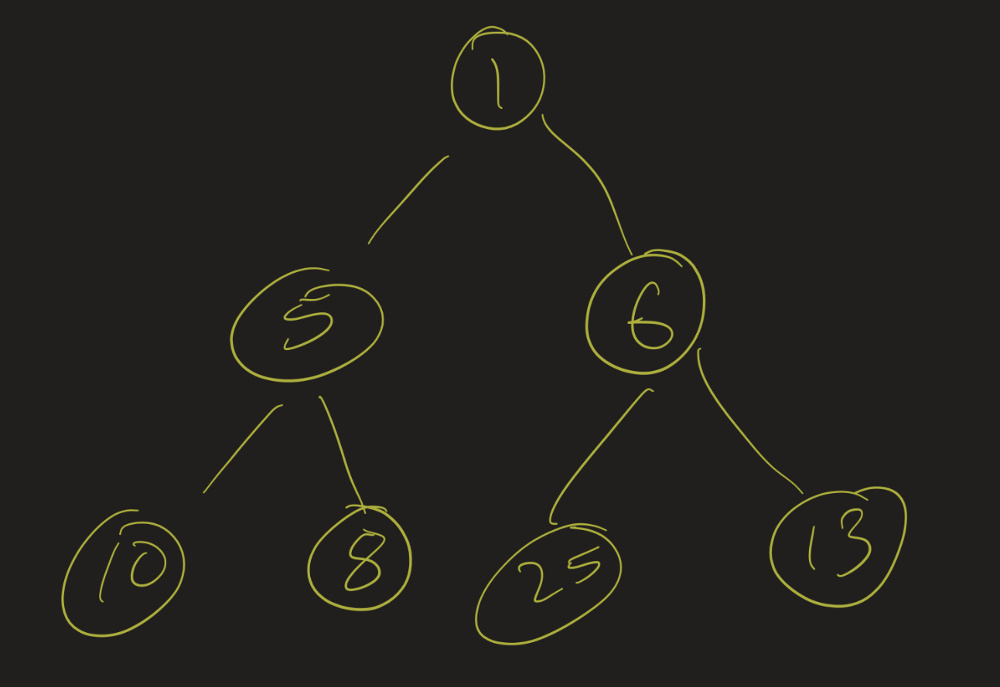
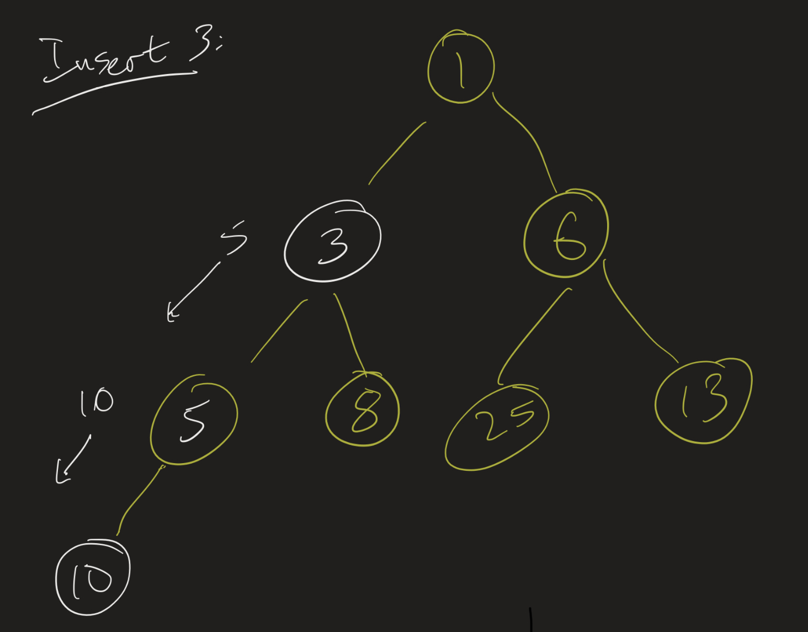
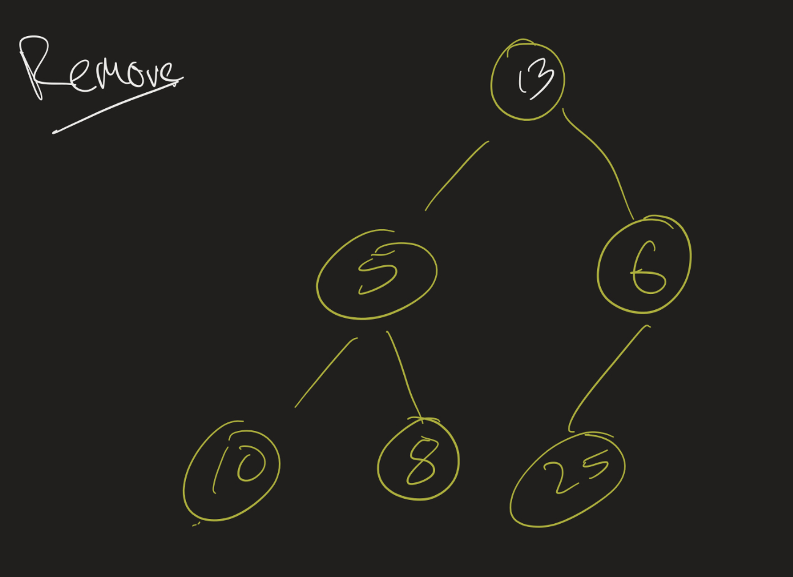
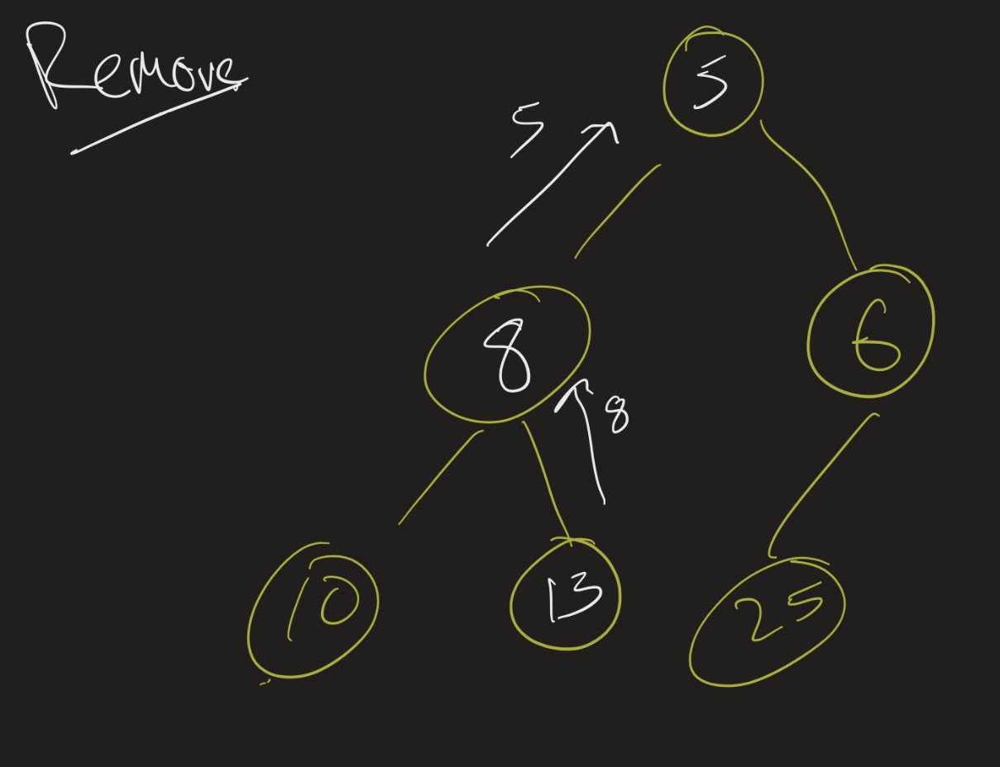

Professor Abdul-Quader
Heap implementation / Heapsot
Min-heap:
peekMin method (O(1)?).
Insert 3: slide 10 down, slide 5 down, then put 3 into that place.

Similar idea:
array[tail - 1] and
array[0]index = 0.array[child] < array[index]:
array[child] up.array[index]

Selection problem from last time
list[i] > minimum. If so, remove
min and add \(list[i]\).How do we turn an array into a heap?